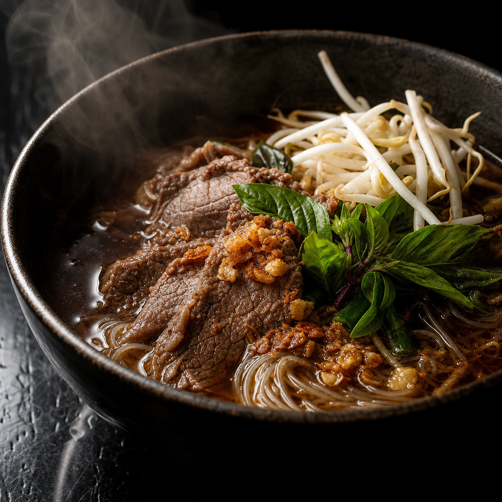
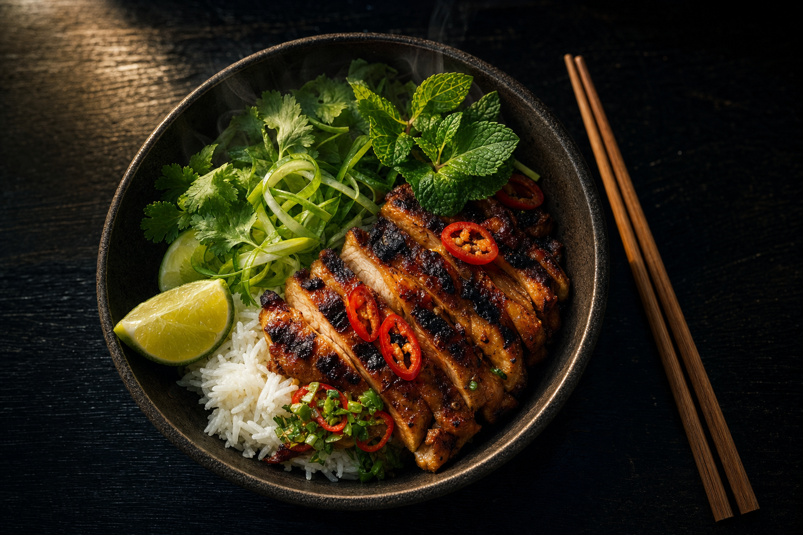
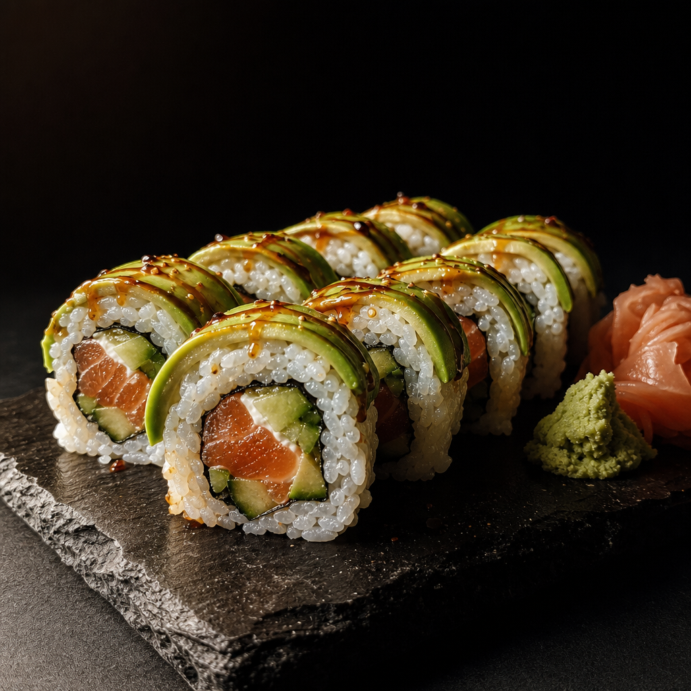
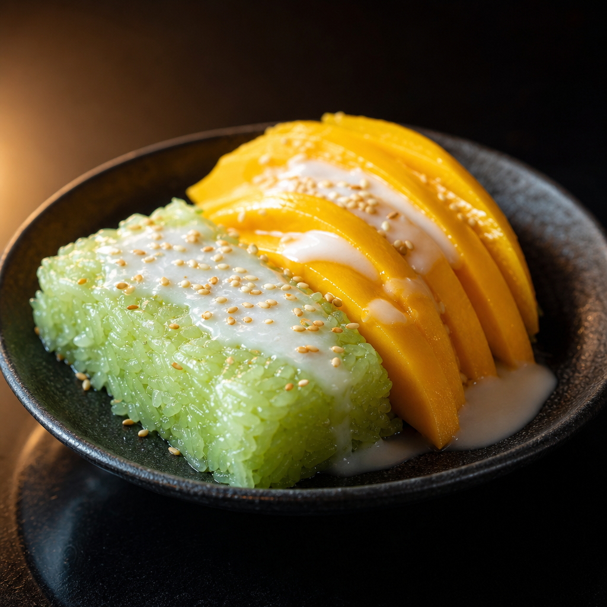
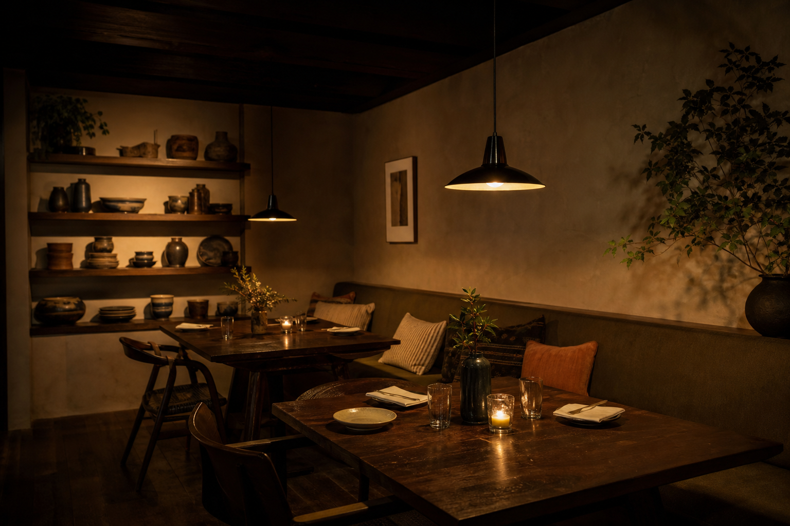

Boat noodle soup
Dark, deep broth and rice noodles. The dish reviewers name first.

Ribbon cut by Mayor Jeanette Rishell, 31 May 2024 · 4.6 from 452 Google reviews · Thai & Japanese, Manassas Park
Lunch
11am – 3pm
Dinner
5pm – 9pm
Two kitchens under one roof. If it is your first time, these three are the ones people come back for.

Dark, deep broth and rice noodles. The dish reviewers name first.

Our own roll, and the reason the sushi side of the menu exists.

Worth ordering at the start so you are not too full to have it.
Lil' Bowl began as a stall inside the Fresh World supermarket — a small counter, a short menu, and a lot of regulars who kept turning up for the same bowl.
It grew into this room across the street from City Hall. On 31 May 2024 Mayor Jeanette Rishell cut the ribbon on the new dining room. We are still cooking the same food.
— Nid Wilasineewan

Open when the weather allows, and dogs are welcome on it.
A separate catering menu for offices, parties and anything that needs feeding in bulk.
A room of your own for a birthday, a team dinner or a family gathering. Ask and we will hold it.
An unsolicited design concept for Lil' Bowl Thai & Japanese Cuisine, prepared by Ohtari Labs. This is not their website.